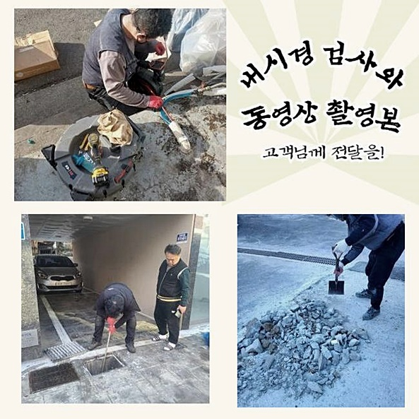
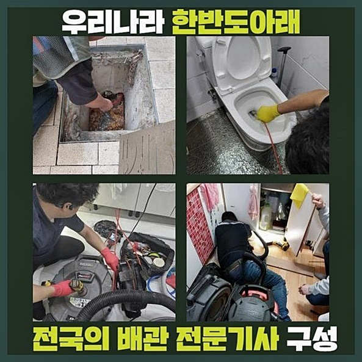
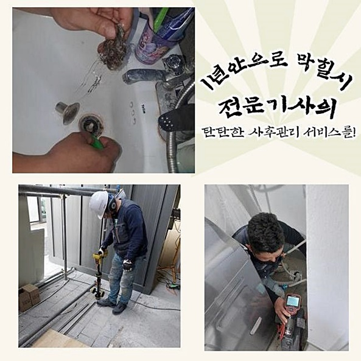
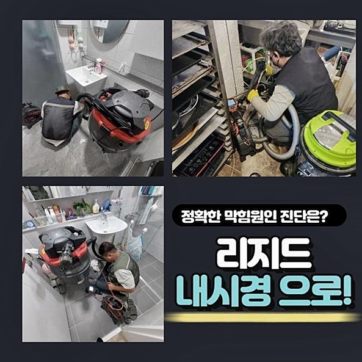
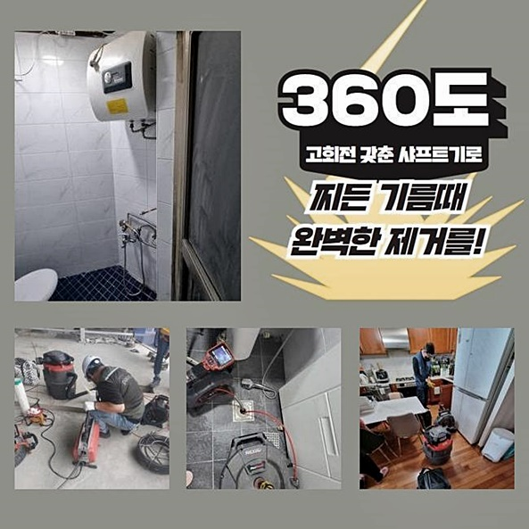
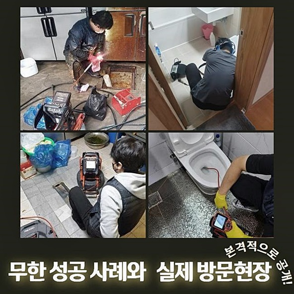
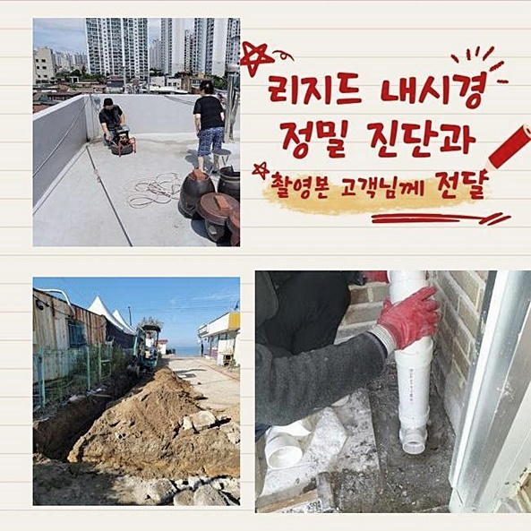

🏠 천안 대흥동화장실하수구역류 안서동 하수구뚫어주는곳 배관전문
천안 대흥동 하수구막힘 전문 시공 후기

📋 작업 개요
- 위치: 천안 대흥동, 대흥동, 천안
- 서비스 유형: 하수구막힘, 배관막힘, 맨홀막힘, 누수수리, 역류해결, 뚫는업체, 배관청소, 고압세척, 배관보수
- 작업 일시: 2024. 6. 19. 9:49
- 업체명: 하수구수사대 (010-5615-2118)
🔍 문제 상황
천안 대흥동화장실하수구역류 안서동 하수구뚫어주는곳 배관전문
오늘 포스팅에서는 하수관의으로 고생했던 의뢰인의 소식을 들려드릴게요
복층빌라에서 배수구에 이상이 생겨 고여있는 사태에 놓이게 된 사례자분은 집에 가지고 있던 물건을 활용해 수리를 해보고자 해보았으나 현상을 더욱 안 좋게 흘러가게 했습니다
설비기사님이 배수관을 꼼꼼히 진단을 해보니 꺾인 배관이 막히게 되어서 배수기능이 원활히 되지 않은걸로 진단되었습니다
천만다행으로 의뢰자분의 집에는 누수는 없었는데요, 막혀버린 배관을 고칠 수 없는 상황이라 전문업체의 노하우가 필수적이었습니다
늦은 저녁에 연락이 닿았고 신속하게 배수관을 꼼꼼히 고객님과 이야기를 나누게 되었습니다
문제 해결을 위해 다양한 소식을 들었는데, 하수관 막힘이 해결해야 할 과제였습니다
전문가들은 구체적인 이야기와 원인확인을 위해 적극적으로 이야기들을 주의 깊게 듣습니다 이 부분을 기초로 곤란을 해결할 수 있도록 최선을 다하고 있어요
그렇기에 우리 전문가들은 이와같은 사례를 기반으로 계속해서 진화하고 있죠
더욱이나 하수도 막힘 문제해결을 위해서는 장비 기능이 대단히 중요할 수 있습니다
우리팀은 내시경장치와 석션장비로 인식되고 있는 첨단기술 기기를 가지고 있어 업계 선두를 보유하고 있습니다
좋다는 세정제를 사용했지만 꽉 막혀있어서 불편하셨다고 했습니다
배수가 안되는 현장을 방문해서 살펴보니 현장에 위치한 공동배관 중간이 막힌것을 파악했습니다

🔎 원인 분석
💡 전문가 진단: 정밀 진단 장비를 사용하여 슬러지의 고착 여부를 판명하고 타격/세척 작업을 실시했습니다.
공동 배수관은 크기가 크고 상당히 넓은편이어서 막힌 지점을 지대한 제거하기는 까다로운 일이었습니다
이로 인해 강력한 물세척을 실시해 드렸어요
강력한 수압으로 세척을 하고 나니 배수가 원활해졌고 다른 이슈도 없었습니다
해당 아파트는 다수의 세대가 공유하여 사용하고 있는 형태로 되어 있어서 한 세대뿐만 아니라 여러 가정에 동일한 장애가 발견되는 경우가 흔합니다
이 같은 상황에선 배수관이 교차되는 지점에서 처리를 하게됩니다
다수의 가정이 함께 사용하고 있는 하수관은 주기적으로 세척과 점검을 실행함이 필요하죠
무엇보다나 해당 상점이 입점한 건물에서는 영향을 받은 인근 점포가 상당수였습니다
근처의 상점에서는 수도들을 쓸 수 없다 보니 매장 영업에 지장을 받았으며 같은 층에 위치한 화장실 또한 배관이 막히며 사용불가한 상태였습니다
이 같은 문제는 매장운영을 할 때 바로 피해를 주기 때문에 신속히 조치들이 요구되었습니다 하수구가 막힌 원인은 건축물의 구조적인 특성 및 인근 환경등의 다양한 변수로 일어나게 됩니다
결론적으로 이유를 알기위해서는 여러가지 부분을 확인해야 합니다
저희들은 짧은시간 안에 막힘의 주요한 원인들을 발견했습니다
상가의 지하 하수관이 배수장애의 주요 요인이었어요
그러나 맨홀에서 확인하는 것이 힘들어서 처음에는 눈치채기 어려웠습니다

🔧 작업 과정
배관 고압 청소 작업을 실시하려고 장비를 가져왔지만 찌꺼기들이 상당량 축적된 상태였습니다
따라서 다른 방법의 조치들이 요구되었습니다
전문가들은 고객의 불편함을 돕기 위해 완벽하게 최선을 다하고 있어요
최근엔 동네에서 막혀버린 배관을 해결이 위해 강한 수압으로 청소를 실행하게 되었습니다
찌꺼기를 완전히 내보내기위해 높은 수압을 사용해서 하수도관에 손상없이 깨끗하게 배수고민을 수리했습니다
절차가 난해하여 고단했지만 숙련된 베테랑이라 정확하고 속도감있게 수리를 마쳤어요
한 세대뿐만 아니라 이웃들의 문제도 모두 개선되어 건물 주민들의 충족을 얻어낼 수 있었습니다
배관에 알맞게 하수구를 정리하고 최적화된 상태를 유지하려고 모든 노력을 다하고 있습니다
여러분의 만족도 향상을 위해 늘 즉각적인 해답을 드리겠습니다
배수구에 화장지나 비누가 있을경우 관통장비를 적용하여 막고있는 물질들을 미는 계획을 적용할 수 있습니다
그러나 찾아가서 점검해보니 물빠짐이 되지않고 실상은 역행하여 하수도 쪽에 이상이 있을 가능성이 큰것으로 파악되었습니다
따라서 이물질 때문이 아닌 배수 파이프 본체에 이상 있음이 확인되어 이웃 집에서도 동일한 장애가 발생하고 있는지 조사하기 위해 관리팀과 함께 면밀하게 검사를 실시하였습니다
결정적으로 몇몇 가구에서 생활 하수가 효과적으로 차오르는 이슈가 확인되어 메인 배수관을 추적해보니 현장에 위치한 하수도 쪽에 이상이 나타나고 있는 것을 확인하였습니다
이 결과 따라 주민분들께 현장상황을 고지하고 신속하게 장비를 가져와 이슈를 해결할 수 있게 실행했습니다
막힌 배수관의 문제점들이 수리되니 여러분의 불편을 없앨 수 있었어요
고객님들께 이런 현상에 대해 설명드렸습니다
고객님은 배수구에서 하수관 막힘이 생긴 것을 조금도 예상하지 못했다고 말씀주셨습니다
이러한 경우 배수구가 막힌 상황에서는 베테랑이 아니면 수리가 까다롭습니다
전문가가 아니라면 문제 해결이 힘듭니다
하지만 저희들은 다양한 경험을 가진 전문기사로 이뤄져 있어 어디든 말끔히 수리합니다
고객님댁에 방문한 베테랑 기사님께서도 많은 실무경험을 가진 검증된 전문가입니다


✅ 작업 완료
믿을수 있는 팀은 이처럼 경험많은 전문인력으로 구성되었습니다
이런 이유로 상업적인 장소 또한 보수를 진행하지만 주거유형에 관계없이 배수가 안되는 상황을 언제나 처리해드렸습니다
배관이 막힌 상황에는 강한 청소약품이나 자나 막대기 같은 생활용품들을 적용하여 곤란을 처리하려고 하는 노력은 도리어 배수파이프에 악영향을 발생시킬수 있어 지양해야합니다
그렇기 때문에 배수구가 막힐때 신속하게 베테랑에게 연락하여 원인 파악이 필수적입니다
배관수리 팀은 한 고객분의 곤란을 전문적이며 신속하게 해결해드릴 것을 말씀드립니다
물이 내려가지 않아 불편하시다면 누구나 배관 전문업체에 문의를 남겨주세요




⚠️ 베란다 누수 및 방수 관리 방법
- ✅ 비가 많이 올 때 창틀 주변이나 아래층 천장에 얼룩이 생기는지 정기적으로 확인해 보세요.
- ✅ 우수관 주변 실리콘 마감이 들뜨거나 깨진 틈새가 있는지 손상 여부를 수시로 체크하세요.
- ✅ 베란다 바닥 타일의 줄눈(메지)이 소실되면 그 틈으로 물이 침투하여 누수가 유발됩니다.
- ✅ 누수 의심 증상 발견 시 방치하면 아래층 손실이 커지므로 즉시 전문가의 진단을 받으십시오.
💡 핵심 정리
- 확실한 장비 작업(내시경 점검 및 샤프트 스케일링)으로 원인을 뿌리 뽑습니다.
- 작업 후 1년 이내에 동일한 부위 재발 시 100% 무상 A/S 서비스를 보장합니다.
- 서울 · 경기 · 인천 전 지역에 24시간 언제든 긴급 출동할 수 있도록 항시 대기 중입니다.
❓ 자주 묻는 질문 (FAQ)
🚨 천안 대흥동 하수구막힘 문제로 고민이신가요?
정확한 원인 진단과 확실한 시공으로 재발 없는 해결을 약속드립니다.
24시간 긴급 출동 | 서울 · 경기 · 인천 전지역 | 1년 내 재발 시 무상 A/S